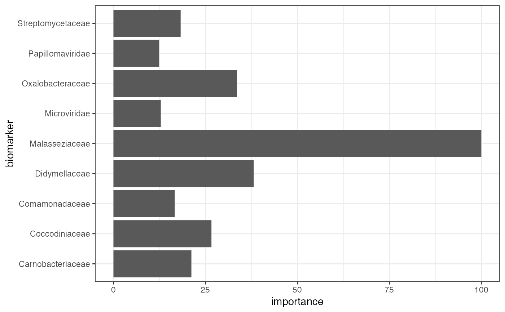
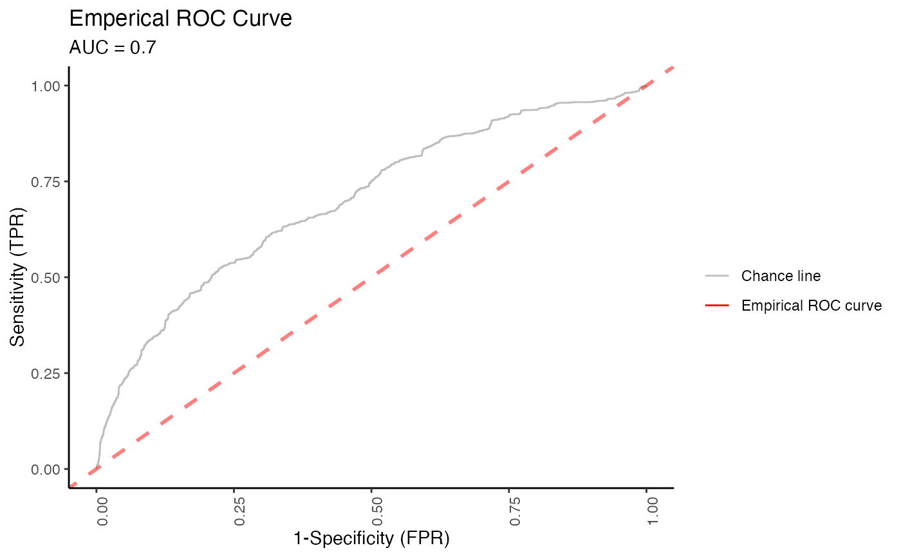

Identify biomarkers
find_biomarker(
MAE,
tax_level,
input_select_target_biomarker,
nfolds = 3,
nrepeats = 3,
seed = 99,
percent_top_biomarker = 0.2,
model_name = c("logistic regression", "random forest")
)A multi-assay experiment object
The taxon level used for organisms
Which condition is the target condition
number of splits in CV
number of CVs with different random splits
for repeatable research
Top importance percentage to pick biomarker
one of 'logistic regression', 'random forest'
A list
data_dir <- system.file("extdata/MAE.rds", package = "animalcules")
toy_data <- readRDS(data_dir)
p <- find_biomarker(toy_data,
tax_level = "family",
input_select_target_biomarker = c("DISEASE"),
nfolds = 3,
nrepeats = 3,
seed = 99,
percent_top_biomarker = 0.2,
model_name = "logistic regression"
)
#> Loading required package: ggplot2
#> Loading required package: lattice
p
#> $biomarker
#> biomarker_list
#> 1 Carnobacteriaceae
#> 2 Coccodiniaceae
#> 3 Comamonadaceae
#> 4 Didymellaceae
#> 5 Malasseziaceae
#> 6 Microviridae
#> 7 Oxalobacteraceae
#> 8 Papillomaviridae
#> 9 Streptomycetaceae
#>
#> $importance_plot

#>
#> $roc_plot

#>